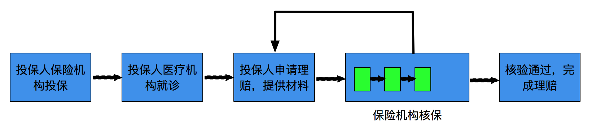
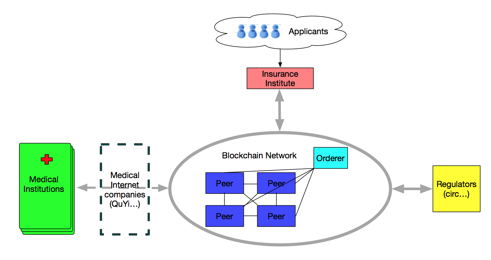
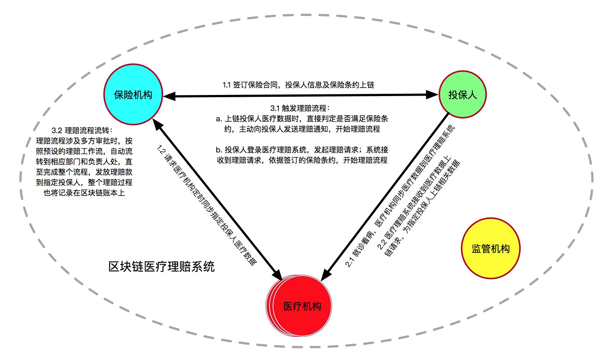
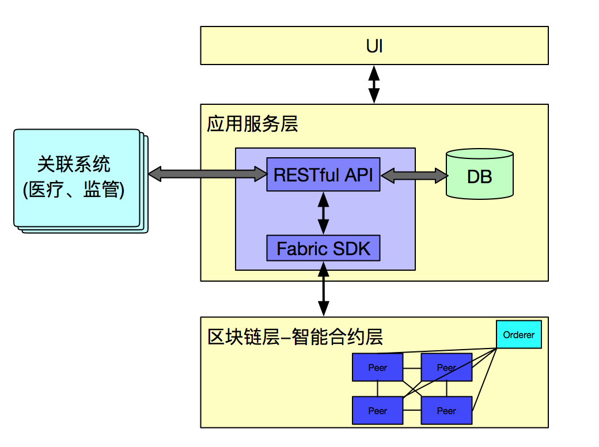
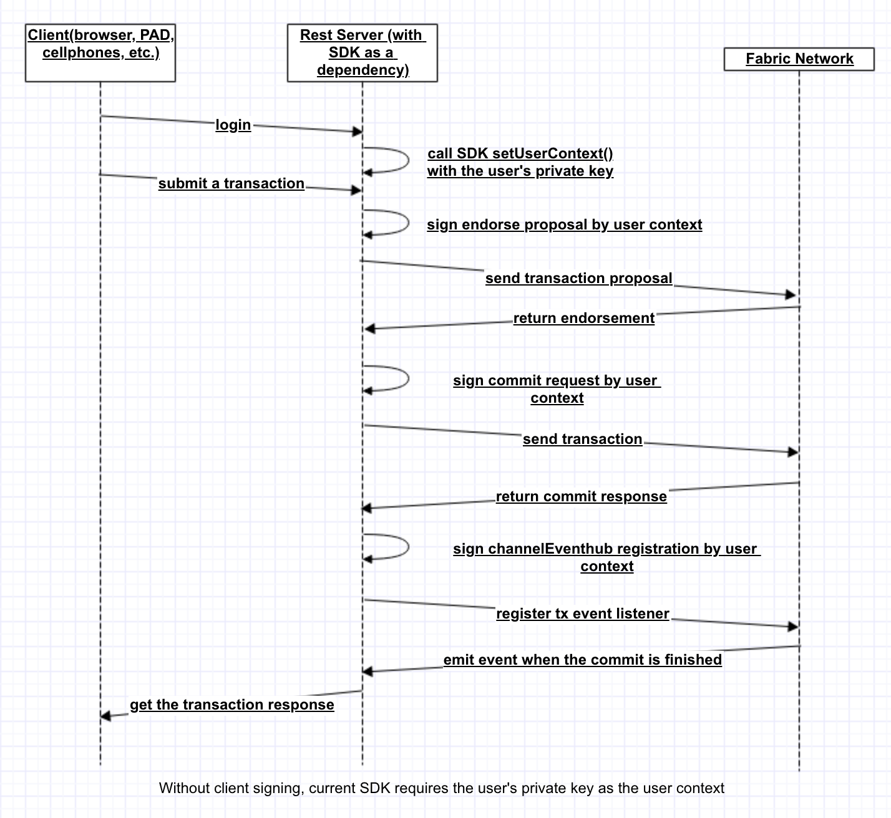
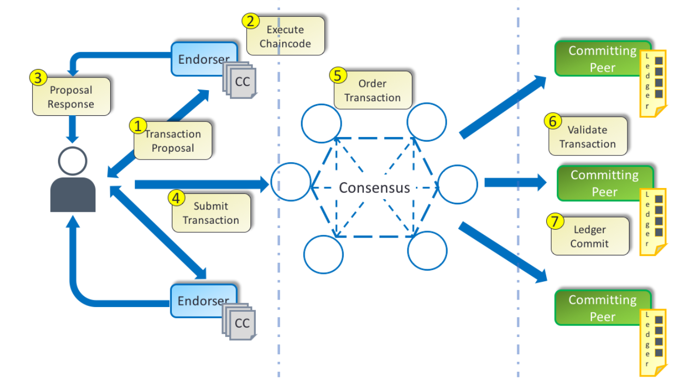
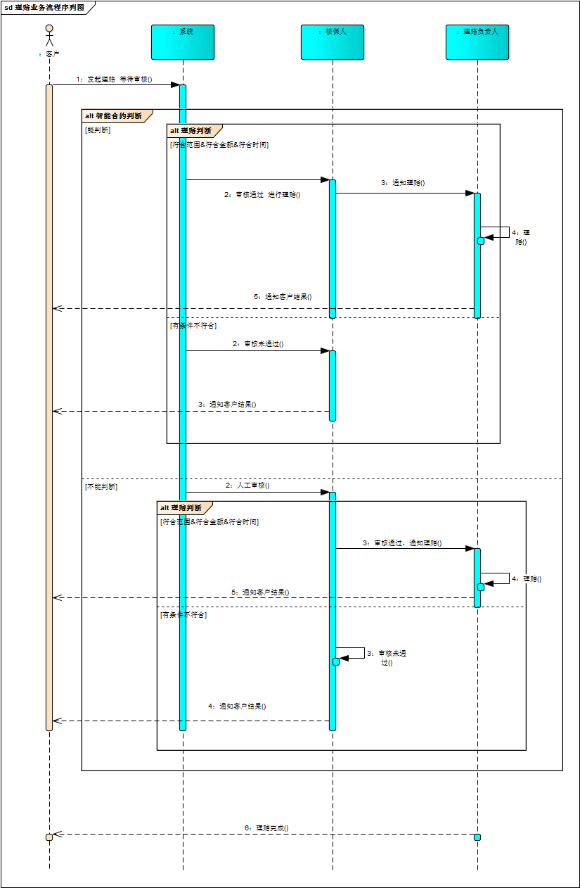
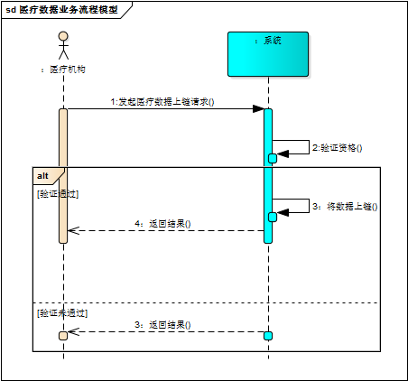

class: center, middle background-image: url(background.jpg)  <font color="#FFFFFF"> # 区块链领域相关探索介绍 #### HDC实验室 刘阳 #### 2018年7月 </font><br /> --- background-image: url(background.jpg) # <br/><br/> <font color="#FFFFFF"> # Agenda 1. 技术说明 2. 解决的问题领域 3. 我们的探索 4. 案例分享 5. future 6. 附录 </font><br /> --- background-image: url(background.jpg) # <br/><br/> <font color="#FFFFFF"> #技术说明 区块链是受信任的分布式账本数据库，记录商业网络中所有参与者的商业过程（交易）。 </font><br /> --- background-image: url(background.jpg) # <br/><br/> <font color="#FFFFFF"> #解决的问题领域 区块链技术解决了在商业行为中，参与者互相之间在敏感数据和敏感操作行为的不信任问题，保证了数据可追溯、不可篡改，行为合约化不可抵赖、不可否认。 其由于解决方式不同项目多分为联盟链项目和公链项目。 现阶段区块链相关产品及解决方案多集中在联盟链针对B端供应链相关资源整合，溯源领域进行项目实践探索和公链针对虚拟货币，闭环基于虚拟货币的游戏开发、事件预测合约开发项目实践探索等。 针对B端客户的平台开发团队多采用自主开发搭建区块链网络，使用例如hyperledger fabric 等底层开源联盟链项目为基础进行网络搭建、研发实践并提供给客户整体性解决方案。 针对C端客户的应用开发者多直接基于具有业内公信力的底层公链进行应用开发。 </font><br /> --- background-image: url(background.jpg) # <br/><br/> <font color="#FFFFFF"> #案例分享 以基于fabric的联盟链项目实例分享我们在区块链领域的实践 </font><br /> --- background-image: url(background.jpg) # <br/><br/> <font color="#FFFFFF"> # 案例分享 ### 行业问题 传统的医疗保险理赔流程费时、耗力、不可靠  + 理赔信息来源不透明 + 人工理赔人员管理成本高 + 理赔结果反馈效率低 </font><br /> --- background-image: url(background.jpg) # <br/><br/> <font color="#FFFFFF"> ### 选型动机 ##### 优势：fabric区块链拥有不可篡改、不可否认的特性，有效的安全机制、权限管理策略 + 应用区块链技术的医疗理赔流程，可以极大限度地减少人为参与，加强信息共享和流通，保证数据真实性， 实现自动核保、快速理赔的目标 + IBM拥有区块链方面扎实的技术积累和丰富的项目落地经验，以及医疗、保险的行业经验 + 高校团队不仅可以获得技术上的提高，了解前沿技术-区块链；还能够在医疗以及保险行业做真实的项目实践 </font><br /> --- background-image: url(background.jpg) # <br/><br/> <font color="#FFFFFF"> ### 解决方案 参与方：（投保人、）保险机构（核保等业务人员）、医疗机构（或第三方医疗数据提供机构）、监管机构  </font><br /> --- background-image: url(background.jpg) # <br/><br/> <font color="#FFFFFF"> ### 解决方案  </font><br /> --- background-image: url(background.jpg) # <br/><br/> <font color="#FFFFFF"> ### 技术架构设计  </font><br /> --- background-image: url(background.jpg) # <br/><br/> <font color="#FFFFFF"> ### 环境及应用技术及框架 CentOS7 Spring Boot mongodb 存msp数据 couchdb 存链上数据 zookeeper 集群管理 kafka … </font><br /> --- background-image: url(background.jpg) # <br/><br/> <font color="#FFFFFF"> ### 采用 Transaction flow without client signing 模式 #### 在server端进行transaction签名及验签，对私钥进行集中管理保证B端的安全和高效 #  </font><br /> --- background-image: url(background.jpg) # <br/><br/> <font color="#FFFFFF"> ### Transaction Flow #  fabric-client 1.3.0 </font><br /> --- background-image: url(background.jpg) # <br/><br/> <font color="#FFFFFF"> #流程设计 以业务流程和数据流程两个维度展现该案例主要功能实现步骤 </font><br /> --- background-image: url(background.jpg) # <br/><br/> <font color="#FFFFFF">  </font><br /> --- background-image: url(background.jpg) # <br/><br/> <font color="#FFFFFF"> <img src="2.jpg" width = "800" height = "550" div align=left /> </font><br /> --- background-image: url(background.jpg) # <br/><br/> <font color="#FFFFFF">  </font><br /> --- background-image: url(background.jpg) # <br/><br/> <font color="#FFFFFF"> <img src="3.jpg" width = "800" height = "550" div align=left /> </font><br /> --- background-image: url(background.jpg) # <br/><br/> <font color="#FFFFFF"> <img src="5.jpg" width = "800" height = "550" div align=left /> </font><br /> --- background-image: url(background.jpg) # <br/><br/> <font color="#FFFFFF"> ### 部分智能合约 demo使用go进行合约开发，采用三个维度的方法进行业务逻辑智能优化 code部分展示 ``` Java func (t *SimpleChaincode) check(stub shim.ChaincodeStubInterface, args []string) pb.Response { fmt.Println("########### example_cc check ###########") var contractID,medicareID string //人名加相关数据名称 var err error if len(args) != 3 { return shim.Error("Incorrect number of arguments. Expecting 4, function followed by 2 names and 1 value") } contractID = args[1] medicareID = args[2] ``` </font><br /> --- background-image: url(background.jpg) # <br/><br/> <font color="#FFFFFF"> ``` Go // Get the state from the ledger // TODO: will be nice to have a GetAllState call to ledger var contract_Value []byte contract_Value, err = stub.GetState(contractID) if err != nil { return shim.Success([]byte ("NULL")) } if contract_Value==nil { return shim.Success([]byte ("NULL")) } var medicare_Value []byte medicare_Value, err = stub.GetState(medicareID) if err != nil { return shim.Success([]byte ("NULL")) } if medicare_Value==nil { return shim.Success([]byte ("NULL")) } fmt.Printf("contract_Value=%s,medicare_Value = %s\n",string(contract_Value),string(medicare_Value)) contract := &Contract{} err = json.Unmarshal(contract_Value, &contract) if err != nil { return shim.Error("Failed to Unmarshal contractValue.json") } fmt.Println(contract) fmt.Println("contract.orderedName:", contract.OrderedName) var medicare Medicare err = json.Unmarshal(medicare_Value, &medicare) ``` --- background-image: url(background.jpg) # <br/><br/> <font color="#FFFFFF"> ```go if err != nil { return shim.Error("Failed to Unmarshal medicareValue.json") } fmt.Println("medicare.patientName:", medicare.PatientName) //比较相关的数据是否符合理赔条约 if contract.OrderedName!=medicare.PatientName { return shim.Success([]byte ("被保人姓名与就医人姓名不符")) } if contract.CertifiType2!= medicare.CertifyType3 { return shim.Success([]byte ("被保人证件类型与就医人证件类型不符")) } if contract.CertifiNumber2!=medicare.CertifiNumber3 { return shim.Success([]byte ("被保人证件号与就医人证件号不符")) } if contract.Sex2!=medicare.Sex3 { return shim.Success([]byte ("被保人性别与就医人性别不符")) } //string时间数据转换为int时间数据 var orderstartDate,orderendDate,visitTime int orderstartDate, _ = strconv.Atoi(contract.OrderstartDate) orderendDate, _ = strconv.Atoi(contract.OrderendDate) visitTime, _ = strconv.Atoi(medicare.VisitTime) ``` --- background-image: url(background.jpg) # <br/><br/> <font color="#FFFFFF"> ```go if orderstartDate<=visitTime { if orderendDate>=visitTime { return shim.Success([]byte ("success")) }else{ return shim.Success([]byte ("不在投保时间范围内")) } } else { return shim.Success([]byte ("不在投保时间范围内")) } switch { case contract.Kind1==medicare.Kind : fmt.Println("符合%s类型的投保条件", contract.Kind1) case contract.Kind2==medicare.Kind : fmt.Printf("符合%s类型的投保条件", contract.Kind2) case contract.Kind3==medicare.Kind : fmt.Printf("符合%s类型的投保条件", contract.Kind3) case contract.Kind4==medicare.Kind : fmt.Printf("符合%s类型的投保条件", contract.Kind4) case contract.Kind5==medicare.Kind : fmt.Printf("符合%s类型的投保条件", contract.Kind5) case contract.Kind6==medicare.Kind : fmt.Printf("符合%s类型的投保条件", contract.Kind6) ``` --- background-image: url(background.jpg) # <br/><br/> <font color="#FFFFFF"> ``` Go case contract.Kind7==medicare.Kind : fmt.Printf("符合%s类型的投保条件", contract.Kind7) case contract.Kind8==medicare.Kind : fmt.Printf("符合%s类型的投保条件", contract.Kind8) default: return shim.Success([]byte ("用户未投保")) } switch { case contract.Range1==medicare.Fanwei : fmt.Println("符合%s类型的投保条件", contract.Range1) case contract.Range2==medicare.Fanwei : fmt.Printf("符合%s类型的投保条件", contract.Range2) case contract.Range3==medicare.Fanwei : fmt.Printf("符合%s类型的投保条件", contract.Range3) case contract.Range4==medicare.Fanwei : fmt.Printf("符合%s类型的投保条件", contract.Range4) case contract.Range5==medicare.Fanwei : fmt.Printf("符合%s类型的投保条件", contract.Range5) case contract.Range6==medicare.Fanwei : fmt.Printf("符合%s类型的投保条件", contract.Range6) case contract.Range7==medicare.Fanwei : ``` --- background-image: url(background.jpg) # <br/><br/> <font color="#FFFFFF"> ``` Go fmt.Printf("符合%s类型的投保条件", contract.Range7) case contract.Range8==medicare.Fanwei : fmt.Printf("符合%s类型的投保条件", contract.Range8) default: return shim.Success([]byte ("用户未投保")) } return shim.Success([]byte ("success")) } ``` --- background-image: url(background.jpg) # <br/><br/> <font color="#FFFFFF"> # future 现版本fabric 生产环境使用kafka集群管理提供服务，通常采用zookeeper进行协调，但其稳定性仍然待商榷。 据社区fabric order maintainer 郭剑南介绍，下版本1.4将采用tfts共识算法，该阶段可以单独进行容器部署，脱离kafaka/zoo docker集群管理的限制，进一步提高稳定性和性能。 其支撑能力足以支持常规系统的性能要求。 https://jira.hyperledger.org/browse/FAB-6135 fabric开源项目目前开发进度处于迭代较快的时间，其1.4版本将计划于12月底之前推出，没有进入生产阶段的开发者可以保持期待。。。。 --- background-image: url(background.jpg) # <br/><br/> <font color="#FFFFFF"> # 附录 ### 参考资料 - [fabric项目](https://github.com/hyperledger/fabric) - [fabric v1.3 项目文档](https://hyperledger-fabric.readthedocs.io/en/release-1.3/whatis.html) - [consensus 目前开发进度] (https://jira.hyperledger.org/browse/FAB-6135) -Kostas Christidis ### 案例代码 - [案例demo](https://github.com/brankLY/fabric-brank) --- background-image: url(background.jpg)  <font color="#FFFFFF"> # <center>THANK YOU</center> <center> Slideshow created using [remark](https://github.com/gnab/remark)